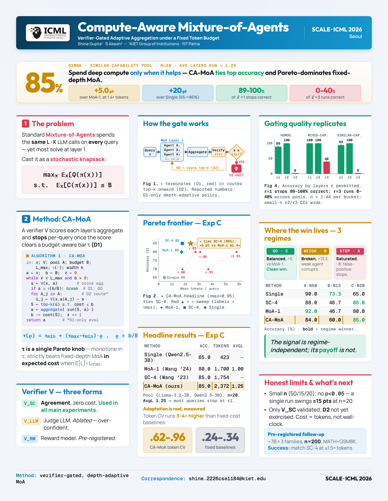

Joint work with Shine Gupta (KIET Group of Institutions), presented at the SCALE workshop at ICML 2026. The paper makes Mixture-of-Agents inference compute-aware: instead of running every agent through a fixed number of layers and summing the cost on every query, a lightweight verifier decides, per query, when the running aggregate is good enough to stop.
The Problem
Mixture-of-Agents (MoA) aggregates responses from several LLMs across a fixed number of layers, then takes the final layer as the answer. The catch is that it spends the same compute on every query. A one-step arithmetic question that any single agent would solve gets the same L layers times K agents as a hard multi-step problem that genuinely needs the full pipeline. The total cost is paid uniformly, which matters because token budgets, memory, and latency are real constraints for agentic deployments. Single-model inference already exploits the idea that easy inputs deserve less compute (early exit, speculative decoding, depth-adaptive transformers), but the multi-agent analogue, where "depth" is the number of MoA layers rather than transformer blocks, had been left untouched.
The Key Idea: CA-MoA
The authors extend MoA with a lightweight verifier V that scores the running aggregate after each layer and makes a per-query termination decision: if V's score exceeds a budget-aware threshold, the policy stops and emits the current aggregate. They call the result Compute-Aware MoA (CA-MoA). Formally, the problem is cast as a budget-constrained policy optimization (a stochastic knapsack with sequential structure), and CA-MoA is a greedy instantiation that is provably monotone in a single threshold knob tau: a higher tau means terminations are harder to satisfy, so the policy runs deeper. A linear schedule moves the threshold with the remaining budget, giving a high bar when budget is plentiful and a lower one as it depletes.
Crucially, the verifier does not need to be Bayes-calibrated; it only needs to rank partial aggregates well enough to gate. The paper studies three verifier forms: V_SC, a self-consistency signal computed over the agent samples already produced (zero extra calls, used in the main experiments); V_LLM, a smaller judge model (ablated); and V_RM, a trained reward model (pre-registered for follow-up). A complementary routing decision that sends only the top candidates to the next layer is specified in the algorithm but deferred to future work.

The Results
The headline setting is Experiment C: a similar-capability heterogeneous pool of two roughly 3B models, Llama-3.2-3B and Qwen2.5-3B, on GSM8K with n=20. CA-MoA reaches 85.0% accuracy, tying 4-sample self-consistency (SC-4), beating fixed-depth MoA-1 by +5 points, and beating the single-agent baseline by +20 points. It does this at 2,372 tokens per query versus MoA-1's 1,700, so about 1.4x MoA-1's tokens, while Pareto-dominating fixed-depth MoA. The average layer count of 1.25 shows the verifier correctly identifies that most queries do not need deeper aggregation.
A direct gating-quality analysis is the cleanest evidence the signal does real work. Stratified by how many layers the verifier permitted, l=1 (terminate early, verifier confident) terminations are correct 88.6%, 100%, and 94.1% across the three pools, while l=3 runs (verifier never confident enough to stop) land at 0% to 40%. If the verifier were uncalibrated you would expect roughly equal accuracy across layer-count buckets, which is not what shows up in any experiment. A token coefficient of variation of 0.62 to 0.96, versus 0.24 to 0.34 for fixed-cost baselines, confirms the policy really does spend 3x to 4x more variable compute on different queries, so the "adaptive" label is earned.
The paper is honest about where CA-MoA does not win. The within-MoA gain over MoA-1 moves from -8 to +13.3 to +5 across three pools, and that arc is the core finding: the verifier-gating signal is regime-independent, but whether it translates into headline accuracy depends on whether the fixed-depth baseline leaves any room for adaptive depth. In a homogeneous Llama-3.2-3B pool (Experiment A, n=50) MoA-1 already saturates at 92%, so adaptive depth has nothing to add and CA-MoA gives up 8 points on occasional false-positive terminations. In a mixed-capability pool with a weak Gemma2-2B (Experiment B, n=15) the under-capable agent corrupts aggregation, MoA-1 collapses to 46.7%, and CA-MoA recovers +13.3 by escalating past the broken layer, though the single strong agent still wins at 73.3% because the pool itself is the bottleneck.
Why It Matters
To the authors' knowledge, CA-MoA is the first proposal to make MoA's aggregation depth per-query adaptive using a verifier signal. The closest precedents, adaptive and early-stopping self-consistency, vary the width of a single model's sample pool; CA-MoA applies the same agreement signal along a different axis, the depth of heterogeneous MoA aggregation, and the two compose. The contribution is the integration with MoA's multi-layer structure rather than the signal itself. Just as useful, the five experiments draw a careful map of when test-time-compute tricks help: CA-MoA wins when the pool is balanced, the benchmark leaves aggregation room, and the verifier is calibrated, and it does not help when the pool is saturated, too weak, or paired with a benchmark too hard for it. A pre-registered roughly 7B follow-up at n=200 with stronger verifiers and the MATH benchmark commits to named success and null criteria, so the next paper answers to the data rather than to post-hoc framing.